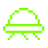

AlbertII
launch date...1949.06.14
Nationality...USA.......
His story...............
붉은털원숭이를 시작으로 원숭이를
우주에 보내는 실험에 이용되었다.
발사 후 약 3분간 비행했지만,
발견되었을 땐 사망한 상태였다.
관련 자료가 거의 삭제 되었으며,
알버트 1세-4세 모두 지구 귀환 직후
사망한 것으로 알려진다.
우주에 보내는 실험에 이용되었다.
발사 후 약 3분간 비행했지만,
발견되었을 땐 사망한 상태였다.
관련 자료가 거의 삭제 되었으며,
알버트 1세-4세 모두 지구 귀환 직후
사망한 것으로 알려진다.